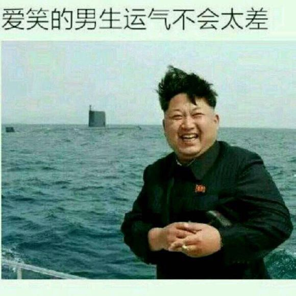
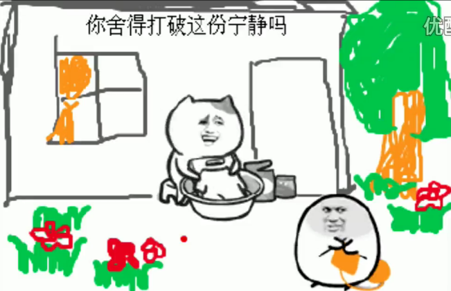
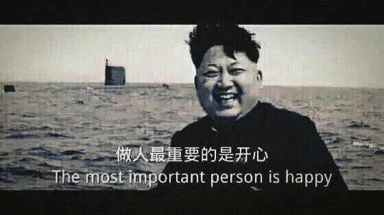
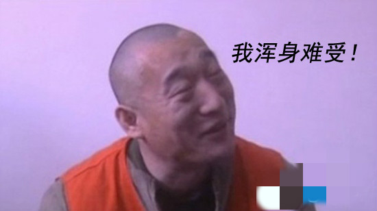
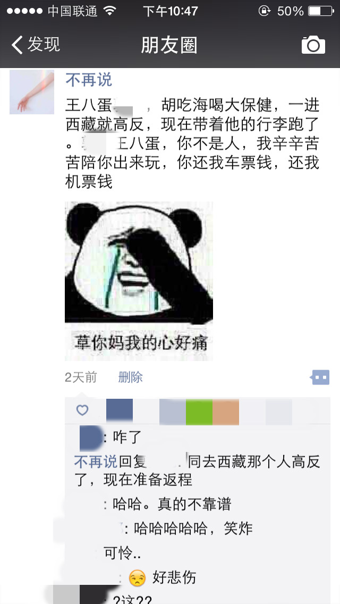

正文: 容我点根兰州。
两天前，我跟一个朋友一起启程去西藏旅游，现在我在武汉工地上。
这场旅游，彻底地改变了他和我
首先我要说下背景。这个朋友，是一个很文艺的青年，弹吉他玩民谣，过街通道卖过唱
可能在所有追求文艺的青年心中，西藏都是一个圣地
所以我的这个朋友也不能免俗
于是他计划了半年还是一年吧，终于选中了一个良辰吉日，恩，4月12号。我们从武汉出发，坐火车前往西宁。预计在西宁玩两天，逛逛青海湖茶卡盐湖，再前往拉萨，玩个十几天
真是一趟完美的旅程啊。
海拔四千米之上的圣湖，古老悠远的藏传佛教，两个天涯浪子背包客，一场说走就走的旅行，或许还能遇到一场奋不顾身的爱情，让青春无悔，让热血与自由飞翔在羊卓雍错
想想，还有点小激动呢
我连个人简介都改好了
然后我们如期出发了
在西宁的火车上，我还记得，他看着窗外连绵的景色，高兴地像个孩子，朋友圈发个不停

他说：大西北，你好
他说：我路过兰州了，董小姐，你呢
真是岁月静好，我亦安好

然而，友谊的风暴说来就来
我惬意地躺在铺子上玩着手机，他面色沉重的跟我说：“我感冒了。不是很舒服...”
“哦？”
“一个鼻子还在堵着...”
“哦...”
“我在武汉已经吊了三天针，没想到现在越来越严重了。”
“哦。”
“我刚刚把拉萨回武汉的飞机票退了，咱们不去西藏了吧。”
我怔了下，嘴上问那咱们到了西宁怎么办
“你一会把西宁到拉萨的票退了，咱们改走青海甘肃大环线吧。西宁海拔两千多，高反不严重，大环线也很有逼格啊。”
我默默的沉思了下，也好，正好家里人还没来过西藏，将来跟着家里自驾游来就好了，改线就改线，做人嘛，最重要的就是开心啦

然后我很愉悦地将火车票飞机票都退了，兴致勃勃地开始跟他讨论青海甘肃大环线的问题
第二天中午，我们到了西宁
进了宾馆房间，我翘着二郎腿悠闲自得地查着包车路线，想着今晚是去水井巷觅食呢还是去莫家街？哪儿家的羊排够味?哪儿家的酸奶够醇？哪儿条街的妹子...
就在这时，一道沙哑的声音传进我耳朵
我回过头
眼泪止不住就下来了
我这个朋友，脸肿的啊，跟猪腰子一样
他面色通红，沙哑着说：“我感冒又加重了，现在胸闷、头晕，我浑身难受。”（最后一句请想象大力哥的语调。）

我面无表情
他小声道：“咱们今晚在西宁住一晚，明儿个去重庆吧...我觉得我不行了，西宁海拔两千我也扛不住了，去重庆玩两天回武汉吧...”
我面无表情
我仿佛听到有人在我耳边亲切地说
我颤抖着抽出一根刚买的兰州，哆嗦着点上，深深吸进一口，感受着烟雾在我心肝胆脾肺间弥漫，麻醉
“好。”
但是很快，我再次认识到了我的天真。
他沉思良久，内心一定经过一番激烈的天人交战。终于，一脸悲愤地说：“要不咱，订张今晚的机票直接回武汉吧...。”
............！
我看了猪腰子一眼，那躲避的眼神，那害羞的姿态，那不胜凉风的娇柔
事已至此，也是勉强不来了
我要是偏要勉强，可能来时两个人，回去就一个了
然后，我们订了晚上八点的机票，西宁到郑州。接下来就是一路匆忙
算算时间，在西宁能待5个小时。
我陪他去西宁红十字医院待了两个小时，医生亲切地慰问他是怎么回事
他说，我们今天中午才到西宁，我浑身难受，我们晚上八点飞机就走
医生和蔼的建议他去拍个片，我想她转回头一定骂了句：傻逼
然后拍片，很好，肺没水肿，还能活着登上机
接着回宾馆，收拾行李，去机场
晚上8点的飞机，到郑州的时候是9点50
打车从飞机场到火车站，的士大姐心有灵犀地放着歌，是乌兰托娅那销魂的女高音，我要去西藏啊我要去西藏...
彼时我俩面无表情
到了火车站，买了凌晨1点57的火车票
早上八点成功回到武汉
而我还没缓过神，仿佛还在西宁那两千米海拔之上，呼吸着沧桑的空气
故事的最后，他下了火车
这个曾经对西藏魂牵梦绕的孩子，这个曾经说出我用吉他筑心墙的孩子，这个从马頔追到尧十三，从宋冬野爱到陈粒，毕生愿望就是在云南开个青旅的孩子，感慨着对我说了句
“我现在发现武汉真是个好地方，我以后哪儿都不去了。”
而我刚改完个人简介，点起一根兰州，吞云吐雾间，目光深沉
我有故事，你们，想听吗？
彩蛋：

最后，看在我写这么多的份上，你不点个赞，顺便看看我的个人简介嘛